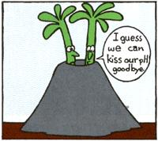

It has long been thought that wood ashes are a good source of potassium for plant nutrition, but recent research has shown that you should use a great deal of caution in adding them to your garden.
Charles Frase, of Tennessee Technological University, analyzed ashes from seven tree species for potassium, phosphorus, calcium, magnesium, and sodium; he also estimated the extent to which the ashes could raise soil pH. His results show that ashes of various tree species can differ widely in their mineral content.
For example, shagbark hickory (Carya ovata) and white oak (Quercus alba) ashes have much less potassium (K) and phosphorus (P) than does hemlock ( Tsuga canadensis ), while ashes of white ash (Fraxinus americana) and silver maple (Acer saccharinum) have intermediate levels of K and P. On the other hand, the shagbark hickory and white oak ashes have the same liming potential-pound for pound-as high-quality ground limestone!
Frase's data indicate that the manner in which wood ashes are used in gardens should be based on the kinds of ashes available and on the pH of the soil. Although detailed information about the mineral composition of most tree species is not available, some tentative generalizations can be made.
It appears that slow-growing, dense hardwoods yield ashes that are best used as liming materials. Based on Frase's research, such ashes can be expected to contain about 2% K, 0.3% P, and 30% calcium (Ca). Their soil-neutralizing value relative to pure calcite (NV/CaC0 3 ) should approximate 100%.
Fast-growing, low-density hardwoods yield ashes that are typically balanced in their levels of calcium relative to their levels of potassium and phosphorus: They contain about 4% K, 1% P, and 20-25% Ca, and have a liming equivalent of 85% NV/CaC0 3 . These ashes can thus be used as liming or fertilizing materials for soils with low or near-neutral pH.
Softwoods are likely to yield ashes with low levels of calcium and high levels of potassium and phosphorus: about 510% K, 1-2% P, 17% Ca, and 60-70% NV/CaC0 3 . These ashes are best used as fertilizing materials only and present little risk of raising soil pH excessively.
Two other considerations: Gardeners in arid regions should watch out for the so dium level of wood ashes, to avoid contributing to soil salinity. Sodium content ranges from about 0.3% in slow-growing hardwood ashes to about 1.5% in softwood ashes. In addition, research at the University of Rhode Island has shown that large applications of wood ashes can result in high concentrations of the toxic heavy metal cadmium in certain garden crops. Wood ashes contain lead, copper, and zinc as well as cadmium, but none of these heavy metals appear to be taken up by plants if the soil pH is between 6.0 and 7.0.
Thus, the most important consideration in applying wood ashes to garden soil is to avoid putting on too much. (The Rhode Island researchers recommend no more than 20 pounds of wood ashes per 1,000 square feet of garden area annually.) Large applications can lead to soil alkalinity and plant accumulation of heavy metals. The key to safe use is annual monitoring of soil pH-keep it between 6.0 and 7.0!
RESEARCH BRIEFS
Thwart Christmas tree thieves with "ugly mix." Sad but true, each holiday season brings out the Christmas tree "rustlers"-and any landscaped area that includes evergreens is at risk. In fact, Cornell Plantations in Ithaca, New York, had trees worth up to $3,000 each cut down and carted away by midnight entrepreneurs . . . until an employee invented a way to make evergreens so ugly (temporarily, of course) that nobody would want to steal them! To make your own batch of "ugly mix," stir together 20 ounces of hydrated lime (from a building supply store) and 4 ounces of Wilt-Pruf anti-transpirant (available at garden stores) in a nonmetallic bowl. Slowly fold and stir that into two gallons of room-temperature water in an aluminum pan. Mix in two bottles of pink food coloring . . . and spray the dye onto your trees with a garden sprayer. Do this during dry weather; rain gradually washes the coating away.
Fumes from fresh-cut wood can harm houseplants! Growers of houseplants belonging to the family Gesneriaceae, including the "true" gloxinia (Sinningia species), Gloxinia perennis, and Drymonia species, report yellowed leaves and defoliation within a week of stacking freshly cut oak firewood in the same room with the plants. To be safe, watch for symptoms on any plants close to your firewood.
Deer problems? Use soap! If you live in an area with abundant deer (as we do!), your orchard is probably a favorite winter browsing spot. A good fence is a sure, expensive cure for the problem, but we've found a cheaper remedy. Hang pieces of deodorant soap (plain soap doesn't work-the deer actually eat some kinds!) in the trees. We use one piece for small trees, and four or more pieces for large ones. The result? Over the past two years, we've had no deer browsing on soap-protected trees.
Green up stored cabbages. A Canadian agricultural researcher exposed stored cabbage to light for a week at 50°F. Afterward, the heads looked greener, and vitamin C in the outer leaves was increased nearly tenfold!
GLEANINGS
A new private firm, the National Houseplant Diagnostic Laboratory, will attempt to determine houseplant ailments by mail. For information and questionnaire/sampler mailer packets, write to NHDL, 257 Midland Ave., Lexington, KY 40502 . . . . "Nutrition of Greenhouse Crops" is a practical guide to mixing and measuring fertilizers for potted plants. It costs $1.00 postpaid from Jay S. Koths, Extension Floriculturist, Plant Science Department, The University of Connecticut, Storrs, CT 06268 . . . . A newsletter devoted to the use of personal computers for backyard garden planning and record keeping? Sure! It's called The Online Gardener, is published quarterly, and costs $8.00 per year from TOG, P.O. Box 803, Watkinsville, GA 30677.
EDITOR'S NOTE: Greg and Pat Williams raise most of their own food on a small farm and publish HortIdeas, a fine newsletter on gardening research and products (available for $10 a year from G. & P. Williams, Rt. 1, Box 302, Gravel Switch, KY 40328).
|
 |
|
|